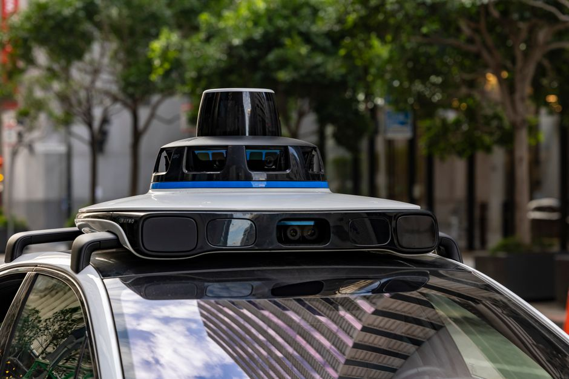

Imagine a world where your car drives itself, navigating busy streets, finding parking, and even picking you up, all without you ever touching the steering wheel. What sounds like a scene straight out of a futuristic movie is rapidly becoming a reality, thanks to incredible advancements in robotics and artificial intelligence. This isn't just about convenience; it's about revolutionizing transportation, making our roads safer, and opening up a whole new realm of possibilities. Welcome to the fascinating world of autonomous vehicles and self-driving technology!
What are Autonomous Vehicles?
At its core, an autonomous vehicle (AV), often called a self-driving car, is a robot on wheels. It’s a vehicle capable of sensing its environment and operating without human input. Think of it as a highly intelligent machine that can "see," "think," and "act" just like a human driver, but with superhuman precision and reaction time.
Levels of Autonomy
To understand how "self-driving" a car truly is, engineers and regulators use a system called the SAE International J3016 standard, which defines six levels of driving automation, from Level 0 (no automation) to Level 5 (full automation):
- Level 0 (No Automation): The human driver does everything.
- Level 1 (Driver Assistance): The car can assist with one task, like adaptive cruise control (maintains speed and distance) or lane keeping (helps stay in lane).
- Level 2 (Partial Automation): The car can perform two tasks simultaneously, like adaptive cruise control AND lane keeping. The driver must remain engaged and ready to take over. Many advanced cars today are at this level.
- Level 3 (Conditional Automation): The car can handle most driving tasks in specific conditions, allowing the driver to take their eyes off the road. However, the driver must be ready to intervene if the system requests it.
- Level 4 (High Automation): The car can fully operate itself in certain defined areas or conditions (e.g., specific cities, highways, good weather). The driver doesn't need to intervene in these "operational design domains" (ODDs).
- Level 5 (Full Automation): The car can drive itself anywhere, anytime, in all conditions, without any human intervention. There might not even be a steering wheel or pedals! This is the ultimate goal.
Most of the self-driving technology we hear about today is striving for Level 3 and Level 4 capabilities, pushing the boundaries of what's possible.
How Do Self-Driving Cars See the World? The Sensory System
Just like humans use their eyes, ears, and touch to understand their surroundings, autonomous vehicles rely on a sophisticated suite of sensors. These sensors are the "eyes" and "ears" of the car, constantly gathering data about the road, other vehicles, pedestrians, and obstacles.
LiDAR: The 3D Mapper
Imagine shining a laser beam and measuring how long it takes for the light to bounce back. That's essentially how LiDAR (Light Detection and Ranging) works! It emits millions of laser pulses per second and creates a highly detailed 3D map of the environment, called a "point cloud." This map is incredibly accurate for measuring distances and shapes, making it excellent for detecting objects and understanding the car's position.
Radar: Seeing Through the Fog
Radar (Radio Detection and Ranging) uses radio waves instead of light. These waves can penetrate fog, rain, and snow much better than light, making radar crucial for adverse weather conditions. Radar sensors are great at detecting the speed and distance of objects, especially other vehicles, and are often used for adaptive cruise control and collision avoidance systems.
Cameras: The Eyes of the Car
Cameras are perhaps the most intuitive sensors. They capture visual information, just like our eyes. With the help of advanced computer vision and artificial intelligence, these cameras can:
- Identify traffic signs (stop signs, speed limits)
- Detect lane markings
- Recognize traffic lights
- Classify objects (cars, trucks, pedestrians, cyclists, animals)
- Estimate distances and speeds of objects
Multiple cameras provide a 360-degree view around the vehicle, giving the AI a comprehensive visual understanding of its surroundings.
Ultrasonic Sensors: Close-Up Details
These small sensors emit high-frequency sound waves and measure the time it takes for the echo to return. They are perfect for short-range detection, typically used for parking assistance, detecting curbs, and navigating tight spaces at low speeds.
Beyond these, GPS (Global Positioning System) helps the car know its precise location on a map, and IMUs (Inertial Measurement Units) track the car's orientation, speed, and acceleration.
The Brain Behind the Wheel: Sensor Fusion and AI
Having all these sensors is great, but the real magic happens when their data is combined and processed. This is where artificial intelligence and a concept called "sensor fusion" come into play.
Sensor Fusion: Putting It All Together
No single sensor is perfect. A camera might struggle in bright sunlight or darkness, LiDAR can be confused by heavy rain, and radar has lower resolution. Sensor fusion is the process of combining data from all these different sensors to create a more complete, robust, and reliable understanding of the environment. It's like having multiple witnesses to an event, cross-referencing their stories to get the most accurate picture.
Perception: Understanding the World
Once the fused data is available, the car's AI system enters the "perception" phase. It uses complex algorithms and machine learning models to identify and track everything around it: where are the other cars? Are there pedestrians crossing? What color is the traffic light? Is that a bicycle or a motorcycle? This is where the car builds a dynamic, real-time map of its environment.
Prediction: Guessing What Happens Next
A good driver doesn't just react; they anticipate. Autonomous vehicles do the same. Based on current speeds, directions, and behaviors, the AI predicts the likely future movements of other vehicles, pedestrians, and even potential hazards. This allows the car to plan its actions proactively.
Path Planning: The Route Ahead
With a clear understanding of its surroundings and predictions of future events, the car's "planning" module decides the optimal path to take. This involves:
- Choosing the best lane
- Deciding when to accelerate or brake
- Planning lane changes
- Navigating around obstacles
- Following navigation instructions to reach the destination
Control: Executing the Plan
Finally, the "control" module takes the planned actions and translates them into physical commands for the vehicle's actuators. This means telling the steering wheel to turn, the accelerator to press, and the brakes to engage, all with incredible precision and speed. This closed-loop system ensures the car continuously adapts to changing conditions.
Autonomous vehicles aren't just cars; they are sophisticated robots on wheels, integrating cutting-edge hardware with advanced artificial intelligence to navigate our complex world.
A Glimpse into the Future (and Present) of Autonomous Driving in India
While fully autonomous vehicles are still in their early stages globally, the potential impact in India is immense. Imagine reducing traffic congestion, improving road safety (India has one of the highest road accident rates), and making transportation accessible to more people. Challenges include diverse traffic conditions, varying road infrastructure, and regulatory frameworks, but research and development are ongoing. Companies and educational institutions are exploring how this technology can be adapted for Indian roads, from public transport solutions to logistics and last-mile delivery. The future of mobility in India could look very different, and much safer, with autonomous technology.
Getting Started with Autonomous Robotics (for Students!)
The concepts behind self-driving cars might seem complex, but you can start exploring them right now! Robotics is the perfect playground for understanding autonomous systems. Here are some ideas:
- Build a Line-Following Robot: This is a classic beginner project that teaches basic sensor input (light sensors) and control logic.
- Create an Obstacle Avoidance Robot: Use ultrasonic sensors (like the car's parking sensors) to detect objects and program your robot to steer clear.
- Learn Programming: Python is a fantastic language for robotics and AI. Start with basic conditional statements and loops.
- Explore Open-Source Platforms: Arduino and Raspberry Pi are excellent for building small-scale autonomous projects.
Here’s a simple Python pseudo-code example illustrating how a robot might make a basic decision based on sensor input:
# Simple pseudo-code for a robot's decision-making logic
def autonomous_decision_making(distance_to_obstacle, object_detected_flag):
# Assume distance_to_obstacle is in meters
CRITICAL_DISTANCE = 0.5 # Meters
CAUTION_DISTANCE = 2.0 # Meters
if object_detected_flag and distance_to_obstacle <= CRITICAL_DISTANCE:
print("ALERT: Obstacle extremely close! Initiating emergency stop.")
return "STOP_IMMEDIATELY"
elif object_detected_flag and distance_to_obstacle <= CAUTION_DISTANCE:
print("WARNING: Obstacle detected ahead. Slowing down and planning new path.")
return "SLOW_DOWN_AND_REPLAN"
else:
print("Path clear. Continuing forward with normal speed.")
return "MOVE_FORWARD"
# --- Example Usage (how this function would be called in a real robot) ---
# Imagine these values come from your robot's sensors
# current_front_distance = read_ultrasonic_sensor_front()
# is_object_visible = detect_object_with_camera()
# Let's simulate some sensor readings:
# Scenario 1: Path clear
# action_1 = autonomous_decision_making(5.0, False) # Output: MOVE_FORWARD
# Scenario 2: Object far ahead
# action_2 = autonomous_decision_making(3.0, True) # Output: MOVE_FORWARD
# Scenario 3: Object moderately close
# action_3 = autonomous_decision_making(1.5, True) # Output: SLOW_DOWN_AND_REPLAN
# Scenario 4: Object very close
# action_4 = autonomous_decision_making(0.3, True) # Output: STOP_IMMEDIATELY
# You would then have another part of your code to execute these actions
# execute_robot_action(action_3)
This simple example shows how a robot can use sensor data (distance_to_obstacle, object_detected_flag) and conditional logic (if/elif/else) to make decisions and take actions. This is the fundamental building block of any autonomous system!
Challenges and the Road Ahead
Despite the incredible progress, many challenges remain. Technical hurdles include dealing with "edge cases" (unusual or rare scenarios), extreme weather conditions, and complex urban environments. Ethical considerations, such as who is responsible in an accident, are also critical. Legal frameworks and public acceptance will play a huge role in how quickly autonomous vehicles become widespread. However, with continuous research and development, these challenges are being addressed, paving the way for a smarter, safer future.
Conclusion: Drive into the Future with MakerWorks!
Autonomous vehicles are more than just a technological marvel; they represent a paradigm shift in how we interact with the world around us. From sophisticated sensors that act as eyes and ears to powerful AI brains that make split-second decisions, every component is a testament to human ingenuity. As students, educators, and enthusiasts, you are at the forefront of this exciting revolution. The skills you learn in robotics, programming, and problem-solving today are the very tools that will shape the autonomous world of tomorrow.
Are you ready to build the future? Dive into the world of robotics and STEM with MakerWorks! Explore our courses, workshops, and resources designed to equip you with the knowledge and hands-on experience to become a creator, innovator, and leader in autonomous technology. The future is autonomous, and you can be a part of building it!